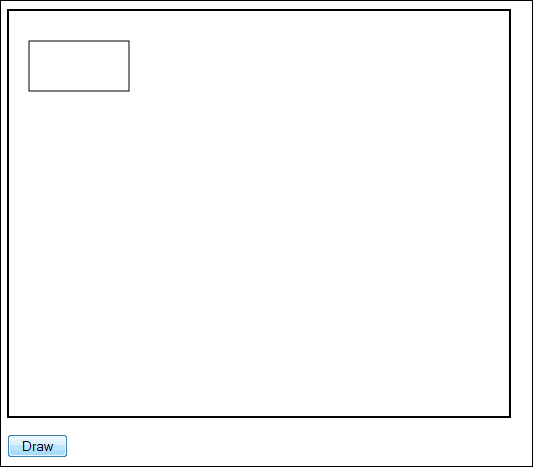
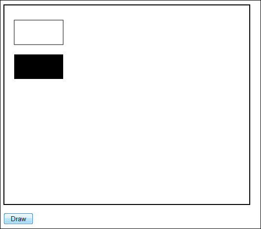
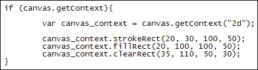
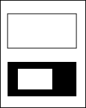
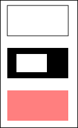
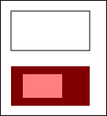

HTML5 Canvas: Drawing Rectangles
Ongoing HTML5 Canvas Tutorial: 1 2 3 4 5 6 7 8 9 10 11 12 13 14 15
To draw rectangles on a HTML5 canvas, three methods are available. They are:
strokeRect
fillRect
clearRect
(There is actually a fourth rectangle method called rect. But this is used in conjunction with beginPath and fill. You'll see how to use these later.)
In between the round brackets of each method you need four things:
x, y, width, height
The X argument is how far from the left you want to start drawing your rectangle, while the Y argument is how far down from the top of your canvas. Height and width are obviously the size you want your rectangle.
To try out rectangles, add the following line to your code from the previous section:
canvas_context.strokeRect( 20, 30, 100, 50 );
A stroke rectangle is one that just had a border, with no colour. The one above starts at 20 pixels from the left edge of the canvas and 30 pixels down from the top. The width is 100 pixels wide and 50 high.
Save your work and refresh your web page in the browser. When you click the
button, it should look like this:

If you want a filled rectangle then the method to use is fillRect. Add the following line to your code, just below the others:
canvas_context.fillRect( 20, 100, 100, 50 );
This will draw a filled rectangle 100 pixels down and 20 from the left. If
you don't specify a fill colour (which we'll do in a moment) then you get a
black rectangle. But here's what your canvas should look like when you click
the button after a refresh:

You can clear areas of a filled rectangle. You do so with the clearRect method. Add the next line to your code:
canvas_context.clearRect( 35, 110, 50, 30 );
This clears a rectangular area starting at 35 pixels from the left and 110 pixels down. The size of the cleared area is 50 pixels by 30 pixels.
Your function should now look like this, though:

Save your work and refresh. When you click the button, your rectangles should look like this:

You can fill your rectangles with a colour. For this you need a fillStyle method. There are two to choose from:
canvas_context.fillStyle = "rgb( 255,0,0 )";
canvas_context.fillStyle = "rgba( 255, 0,0 , 0.5 )";
The first one is for solid colour. The three sets of numbers are for the values Red, Green and Blue. The numbers go from 0 to 255. A value of zero means switch off that colour, while a value of 255 means switch the colour full on.
(As well as using RGB colours, you can use a named colour like "blue" or "red". You can also use a hexadecimal colour value like "#345678".)
The second colour style again gives you an RGB colour, but this time with an alpha value option (the "a" after "rgb"). It means, how transparent do you want the fill? The values go from 0 to 1.
Try a fill style out for yourself. Add the following two lines to your code:
canvas_context.fillStyle = "rgba( 255,0,0, 0.5 )";
canvas_context.fillRect( 20, 170, 100, 50 );
The first line sets up an rgba colour value. The alpha value is set to 0.5. The rectangle is just below the first two. The results in a browser look like this:

Now change the fillRectangle Y value to this:
canvas_context.fillRect( 20, 100, 100, 50 );
So we're putting it on top of the second rectangle, the black one. The results in a browser will be this:

The black rectangle is now a reddish colour, the result of the transparent red one being overlaid.
Now take out the "a" from "rgba". And delete the 0.5. So just this for the fillStyle:
canvas_context.fillStyle = "rgb( 255, 0, 0 )";
When you click the button you'll see a red rectangle. The black one is hidden beneath it.
In the next part, you'll learn how to create circles and arcs.